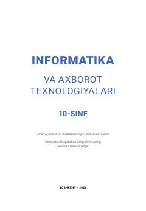

IV10-sinf o'quvchilari uchun informatika va axborot texnologiyalari fani bo'yicha darslik.
Mazkur darslik umumiy o'rta ta'lim maktablarining 10-sinf o'quvchilari uchun mo'ljallangan bo'lib, axborot texnologiyalari va kompyuter savodxonligining asoslarini o'rgatadi. Unda EHM tarixi, axborotlarni kompyuterda tasvirlash va zamonaviy hisoblash texnikasi haqida batafsil ma'lumotlar berilgan.